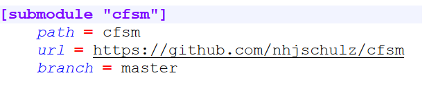
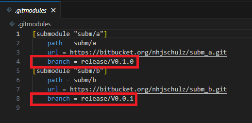
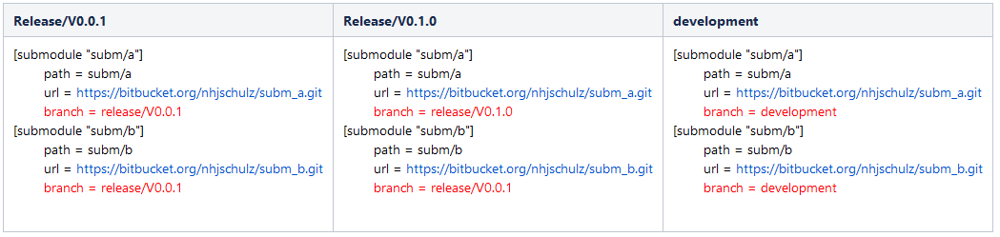

Software Configuration Management with Git Submodules
Abstract
The goal of configuration management is to manage and maintain all components used for the creation of a software system, so that all users of this software work with defined versions. This article describes a method using the Git version control system and submodules to implement detailed versioning of software based system. The basic idea of this method is to divide a software system into components that are individually versioned. It is suitable for projects with high functional safety requirements. The administrative overhead for all project participants should be kept as low as possible. The configuration should remain simple to change and document.
Used Terminology
Repository
A repository in this method is a “standard” Git repository. All items stored inside such a repository share the version history and are versioned together “as a whole”. This means that each component with individual versioning needs its own Git repository.
Reference
A reference is a Git submodule definition to a commit inside another Git repository. These are managed with Git commands or manual editing of the .gitmodules file. The anatomy of such a reference in .gitmodules looks like this:

Each used submodule is defined by such a section within the .gitmodules file. The “submodule” line holds the name of the submodule. By default it is the same as the path entry, but can be customized (–name option for submodule add). The entries for “path” and “url” are always present, branch is optional.
The path field determines the file path where the submodule will apear within the working copy of the referencing repository.
The url field is the access path to the submodule repository. It is the same URL that is used for a “git clone” of the submodule repository..
The “branch” field is optional. It only exists if you want the base repository to follow a branch of the submodule. It will be used consistently later when applying this method.
Components
A component is defined as a part of a system that can be versioned individually. A complete system is created by assembling all components with specific versions. The division of a system into individual components is defined at project level. The method only defines an abstract component model with three hierarchical levels:
Base Component
A “Base” component represents the complete system as a top-level element. It defines the complete system as a composition based on references to other components. Creating a working copy of the system always starts with this component. Most project use exactly one base component. Multiple base components can be useful, if a project contains independent sub-projects. A base component consists of
The basic system content of the project, for example the directory tree, project level documentation and scripts for project management (tools, build scripts ….)
References to other versioned components.
Subsystem Component
A “subsystem” component is a composition of components similar to a base component. It supports the creation of versioned subsystems, which in turn consist of components. An example of such a subsystem component is a communication stack that is composed of services, protocols and device drivers. The use of subsystems must be decided at the project level. They allow for a finer structuring of the system, but also increase the effort required for its configuration. For each subsystem, the references to its components must be maintained in addition to those of the base component. The content of a subsystem component is analogous to the base component, but limited to the scope of the subsystem.
Component
A “component” forms the lowest level in the hierarchy. It represents a partial aspect of the complete system that is no longer subdivided. It contains only one a file tree with no further references to other components.
Git Submodules
Introduction
This configuration method is based on the Git Submodule functionality for the recursive composition of Git repositories. This functionality is applied 1:1 to the composition of components via references. There is no separate tooling required. Any Git tutorial can be used to get a basic understanding of the Git submodules (Example: https://git-scm.com/book/en/v2/Git-Tools-Submodules). A disadvantage of Git submodules is the need to deal with additional Git commands or options for standard operations such as “clone” and “checkout” of branches (e.g. “git checkout development –recurse-submodules “). But this is defined by Git and not caused by this methodology.
Complexity of Submodule Versioning
Git manages submodules in two distinct places within a repository:
Via the .gitmodules file in the root directory of a repository
Within the repository index under .git/modules and in .git/config.
The settings in the .gitmodules file are under version control and visible to a user in the working copy. But sadly this file is primarily used to register submodules (URL + checkout path). The effectively used version is a reference to a commit id of the submodule, which is stored in the index and not in the .gitmodules file. This leads to the following problems:
The contents of the .gitmodules file does not contain all the information about a submodule configuration.
It is not possible to specify the commit id via a tag within the .gitmodules file.
The Git submodule commands only show commit hashes. Used labels and branches must be determined via additional detours.
This complicates both the configuration and the documentation of the used versions for a complete system. Ideally this should be visible from a central location, e.g. within the .gitmodules files. Unfortunately tags are not supported there to request defined versions of submodules. An alternative to the missing tags support is possible via branches by using the optional “branch” entry. This avoids the problems above without having to invent additional scripting/tooling for the versioning. It can then be managed completely via .gitmodules based on branches.
Versioning of Submodules via Branches
The central idea of the method is a consequent use of branches for submodules for both, development and configuration management. The versions of the components are controlled only using “branch” entries in .gitmodules. This restriction has the following benefits:
The configuration of the complete system is entirely defined by the .gitmodules files in the base component and any subsystem component.
The component configuration is documented and easily readable by everyone when checking out a configuration.
The configuration documentation is ensured to be correct as it is also read and used by the Git operations.
The workflows for creating development and release versions are the same.
These branches should be read-only once created, as they can be used as trackers for the submodule file.
Example:

In this example, the system uses two submodules named “subm/a” and “subm/b”. Each one is pointing to a branch within its subsystem repository.
Tagging and Branching of Submodule Versions
The used version of a component is typically marked by a tag. A tag is hardwired to a commit, which then reliably represents the desired state of this version. Git unfortunately only supports branches and no tags within the .gitmodules file. This method therefore uses branches as an alternative to the tag in versioning. Git then follows (“tracks”) this branch, which means that the submodule commit of the branch HEAD will get used. This leads to an obvious problem compared to tags usage. Pushes to a branch change its HEAD and as such leave the originally versioned commit. This problem can be mitigated as follows.
Git repository hosting environments like Github or BitBucket support rights management for branches. It is possible to prohibit the modification of certain branches or restrict them to privileged users. A branch behaves then logically in the same way as a tag. It always represents the same commit.
The ability to change a release branch may even be desirable if bug fixes are to be performed during release phases. However, further changes after the release phase need to be avoided.
An additional release Tag gets created that is pointing to the same commit as the branch HEAD. The “git submodule status” command then shows, if the branch has moved away from this label by further commits. This allows an unintentional change to be detected, for example by a script inside an CI system.
Creating a Component Version
When a component is ready for versioning, the following steps are performed:
A release tag is created on the targeted commit: “git tag -m “Release X.Y.Z” VX.Y.Z <commit-id>”
A release branch is created from the above release tag: “git branch release/vX.Y.Z VX.Y.Z”
The tags and the branch are “pushed”.
A successful creation of a component version will then looks like this:

There is a label and a release branch for each release. The release branches are pushed.
Live Example
A demo repository for demonstrating the submodule versioning with branches is available in BitBucket. The clone URL is https://bitbucket.org/nhjschulz/base.git.
Create a local clone of the repo example including the submodules
$ git clone https://bitbucket.org/nhjschulz/base.git --recurse-submodules
Cloning into 'base'...
<..>
Submodule path 'subm/a': checked out 'c776b6f3ae2e58de0b1dd05302b48004b23492c5'
Submodule path 'subm/b': checked out 'ee28a60fabf10470991d83615021650987885c71'
$ cd base
$ git branch -a
* main
remotes/origin/HEAD -> origin/main
remotes/origin/development
remotes/origin/main
remotes/origin/release/v0.0.1
remotes/origin/release/v0.1.0
Important is the use of the “–recurse-submodules” option for the clone command. The submodules will not be loaded in the context of cloning without this option. But they can still be loaded later on using additional Git commands. In addition to the “main” branch, the repository also contains release branches and a “development” branch.
Checkout Release V0.0.1
$ git checkout release/v0.0.1 --recurse-submodules
branch 'release/v0.0.1' set up to track 'origin/release/v0.0.1'.
Switched to a new branch 'release/v0.0.1'
$ git submodule status
1cc129c0c4bba38384149e53a1143b8b4a370a30 subm/a (V0.0.1)
ee28a60fabf10470991d83615021650987885c71 subm/b (V0.0.1)
The repository working copy is now represents the release V0.0.1 state. The submodule repositories are also using “initial” version number. Note that each submodule uses its own “release/v0.0.1” branch here.
Checkout Release V0.1.0
$ git checkout release/v0.1.0 --recurse-submodules
branch 'release/v0.1.0' set up to track 'origin/release/v0.1.0'.
Switched to a new branch 'release/v0.1.0'
$ git submodule status
c776b6f3ae2e58de0b1dd05302b48004b23492c5 subm/a (V0.1.0)
ee28a60fabf10470991d83615021650987885c71 subm/b (V0.0.1)
The switch to release V0.1.0 also changed the version of submodule “subm/a”. It also advanced to V0.1.0. The second submodule “subm/b” didn’t switch in this version and is still using the V0.0.1.
Checkout a Development Branch
$ git checkout development --recurse-submodules
branch 'development' set up to track 'origin/development'.
Switched to a new branch 'development'
$ git submodule status
382a28f0d54609483a6843c5f13d879868b7b809 subm/a (V0.1.0-2-g382a28f)
ef9039e996aba89c30c75fecd8fb0a82e32bc1bf subm/b (V0.0.1-4-gef9039e)
The switch to branch development has affected both submodules. The cryptic output V0.1.0-2-g382a28f in this case means that we are two commits behind the label V0.1.0 on commit “382a28f…”. It shows that we no longer have tagged versiones of the submodules in our working copy. But since we’re on a “development” branch, that’s probably what we expect. We likely got the latest state of these components now.
Versioning via .gitmodules
The versioning of complete demo system got defined exclusively by the base component (there had been no additional subsystem components). Release branches of the base component refer to well defined versions of the submodule inside the .gitmodules file. Here is an overview of the various .gitmodules contents of the branches in the base component. They differ only in the value of the branch field. This is exactly the desired effect of this method. The .gitmodules file together with the base component version define and documents the versioning of the entire system.

Git Commands for Different Use Cases
This section shows Git command examples for various versioning use cases. In many cases, there are alternative commands that lead to same results. The commands shown here are considered examples to get started using submodule versioning. Advanced users may follow other routes or add scripts for automation. Commands using bold font in the left column are to be executed inside the folder of the submodule component. Otherwise the base component folder will be used.
Creating a Repository with Submodules
| Commands | Description | Example |
|---|---|---|
| mkdir <name> | Creation of an empty folder for the base component named "name" |
$ mkdir basis
|
| cd <name> | Switching into the base component repository. |
$ cd basis
|
| git init | Creation of a new Git Repository |
$ git init
Initialized empty Git repository in
/home/norbert/basis/.git/
|
| git submodule add <repo_url> <local_relative_path> | Adding submodules. This command is repeated for each submodule. |
$ git submodule add https://bitbucket.org/nhjschulz/subm_a.git submod/a
Cloning into '/home/norbert/basis/submod/a'...
remote: Enumerating objects: 36, done.
remote: Counting objects: 100% (36/36), done.
remote: Compressing objects: 100% (26/26), done.
remote: Total 36 (delta 0), reused 0 (delta 0), pack-reused 0 (from 0)
Receiving objects: 100% (36/36), done.
|
| git status | Check the current status. Adding submodules resulted in changes that
need to be checked in. A directory got created for each submodule and the .gitmodules file was created or extended. |
$ git status
On branch master
No commits yet
Changes to be committed:
(use "git rm --cached <file>..." to unstage)
new file: .gitmodules
new file: submod/a
|
| git commit -a -m "<msg>" | Check-in and commit of the modified submodule definitions. |
$ git commit -a -m "Added Submodule https://bitbucket.org/nhjschulz/subm_a.git"
[master (root-commit) 1054429] Added Submodule https://bitbucket.org/nhjschulz/subm_a.git
2 files changed, 4 insertions(+)
create mode 100644 .gitmodules
create mode 160000 submod/a
|
Cloning a Repo with Submodules
| Commands | Description | Example |
|---|---|---|
| git clone <url> --recurse-submodules | Initial cloning of a repository including all submodules. This is achieved by using the "--recurse-submodules" option. Use the following commands if "--recurse-submodules" has been forgotten during clone. This option is primarily a convenience to do this automatically: $ git submodule init '$ git submodule update Cloning into '/home/norbert/submod_cfgmgmt/base/subm/a'... |
$ git clone https://bitbucket.org/nhjschulz/base.git --recurse-submodules
Cloning into 'base'...
remote: Enumerating objects: 34, done.
remote: Counting objects: 100% (34/34), done.
remote: Compressing objects: 100% (31/31), done.
remote: Total 34 (delta 9), reused 0 (delta 0), pack-reused 0 (from 0)
Receiving objects: 100% (34/34), done.
Resolving deltas: 100% (9/9), done.
Submodule 'subm/a' (https://bitbucket.org/nhjschulz/subm_a.git) registered for path 'subm/a'
Submodule 'subm/b' (https://bitbucket.org/nhjschulz/subm_b.git) registered for path 'subm/b'
Cloning into '/home/norbert/submod_cfgmgmt/base/subm/a'...
remote: Enumerating objects: 36, done.
remote: Counting objects: 100% (36/36), done.
remote: Compressing objects: 100% (26/26), done.
remote: Total 36 (delta 0), reused 0 (delta 0), pack-reused 0 (from 0)
Receiving objects: 100% (36/36), done.
Cloning into '/home/norbert/submod_cfgmgmt/base/subm/b'...
remote: Enumerating objects: 29, done.
remote: Counting objects: 100% (29/29), done.
remote: Compressing objects: 100% (21/21), done.
remote: Total 29 (delta 1), reused 0 (delta 0), pack-reused 0 (from 0)
Receiving objects: 100% (29/29), done.
Resolving deltas: 100% (1/1), done.
Submodule path 'subm/a': checked out 'c776b6f3ae2e58de0b1dd05302b48004b23492c5'
Submodule path 'subm/b': checked out 'ee28a60fabf10470991d83615021650987885c71' '
|
Updating the Repository
| Commands | Description | Example |
|---|---|---|
| git pull | The base repository is updated by a pull. It updates the base component working copy, but does not touch the submodules yet. |
$ git pull
remote: Enumerating objects: 1, done.
remote: Counting objects: 100% (1/1), done.
remote: Total 1 (delta 0), reused 0 (delta 0), pack-reused 0 (from 0)
Unpacking objects: 100% (1/1), 149 bytes | 149.00 KiB/s, done.</td>
|
| git submodule update --init --recursive --remote | The submodules are updated to the commits of the branch HEADs as defined by the .gitmodules file. |
$ git submodule update --init --recursive --remote
Submodule path 'subm/a': checked out'382a28f0d54609483a6843c5f13d879868b7b809'
|
Git pull also offers a “–recurse-submodules” option, which automatically adjusts the submodules as well. However, this only works with already known submodules. If new entries appear in .gitmodules with the pull, they will not be processed and a “submodule update” will still be necessary. It is currently more safe to go with the sequence of pull and “submodule update”.
Changing a Submodule Branch
This scenario describes the change of a submodule to another existing branch.
Integrators use it to update submodules to point to new versions. In this case, the base component should be on an integration branch.
Developers use this to set submodules to a development branch for further development. In this case, the base component should be also on a development branch (e.g. feature/x or development).
| Commands | Description | Example |
|---|---|---|
| git checkout <branch> | Set the base component to the target branch (integration or development branch). |
$ git checkout development
Switched to branch 'development'
Your branch is up to date with 'origin/development'.
|
| git submodule set-branch --branch <branch> <module> | Create a branch entry for a submodule in .gitmodules. This command is repeated for all submodules whose branch is to be switched. |
$ git submodule set-branch --branch development subm/a
|
| git diff | With git diff you can see that the branch of the submodule has been changed inside .gitmodules. Note Only the entry in the .gitmodules file has been adjusted. The submodule versions in the working copy have not (yet) changed. |
$ git diff
diff --git a/.gitmodules b/.gitmodules
index 7cb7f77..01af15d 100644
--- a/.gitmodules
+++ b/.gitmodules
@@ -1,7 +1,7 @@
[submodule "subm/a"]
path = subm/a
url = https://bitbucket.org/nhjschulz/subm_a.git
- branch = release/v0.1.0<br />
+ branch = development<br />
[submodule "subm/b"]<br />
path = subm/b<br />
url = https://bitbucket.org/nhjschulz/subm_b.git
|
| git submodule update --recursive --remote | Apply the changes in .gitmodules to the submodules. This sets the commit reference in the index to the HEAD of the branch and checks it out. The "--remote" causes changes from the upstream submodule repository to be fetched first, and then switch to the HEAD of the branches. |
$ git submodule update --recursive --remote
Submodule path 'subm/a': checked out '382a28f0d54609483a6843c5f13d879868b7b809'
|
| git status | A status check shows that we need to check in the changes to .gitmodules and the and the module's directory. At least .gitmodules and all changed submodule folders must be checked in. |
$ git status
On branch main
Your branch is up to date with 'origin/main'.
Changes not staged for commit:
(use "git add <file>..." to update what will be committed)
(use "git restore <file>..." to discard changes in working directory)
modified: .gitmodules
modified: subm/a (new commits)
|
| git commit -a -m "<msg>" | Check in of the submodule branch changes. |
$ git commit -a -m "Changed Submodule A to development branch"
[main d695de1] Changed Submodule A to development branch
2 files changed, 2 insertions(+), 2 deletions(-)
|
Working on a Submodule Patch
A Git submodule is a normal Git repository. It is only located within a base repository, which monitors it for modifications. If you switch into a submodule directory, all Git commands for managing the submodule repository are available. A special situation arises here, as submodules are set to a specific commit during update/checkout from the base repository. Git calls this “detached HEAD” as there is no branch context. To work in a submodule, it needs first to be switched back to a branch. Unfortunately, the “branch” specification of the .gitmodules file does not also cause this branch to be set. Only the HEAD commit of the branch got checked out. You are on the same commit as the branch HEAD, but still “detached” from branches.
The following scenario assumes strict version control at the component level. This means that all components are set to released versions and you have a defined configuration at the beginning. A component (submodule) is now to be extended from this state.
| Commands | Description | Example |
|---|---|---|
| git checkout <version> | Check out the desired version in the base component. |
$ git checkout release/v0.1.0
Switched to branch 'release/v0.1.0'
Your branch is up to date with 'origin/release/v0.1.0'.
|
| cd <submodule> | Switch into the component you want to edit |
$ cd subm/a
|
git status git log <ID> -n 1 |
Check the status of the component. As expected, we are on a commit with no branch context. The log command shows that this commit belongs to the V0.1.0 tag . Since we want to add a feature to this version, we create a new branch for it in the next step. |
$ git status
HEAD detached at c776b6f
nothing to commit, working tree clean
$ git log c776b6f -n 1
commit c776b6f3ae2e58de0b1dd05302b48004b23492c5 (HEAD, tag: V0.1.0,origin/release/v0.1.0, release/v0.1.0)
Author: Norbert Schulz <github@schulznorbert.de>
Date: Mon Sep 30 16:23:33 2024 +0200
Update 8 on dev branch
|
| git checkout -b <name> <tag> | Create a new branch to edit/update the component. Committing and pulling of changes is possible after this step. |
$ git checkout -b feature/new V0.1.0
Switched to a new branch 'feature/new'
$ git status
On branch feature/new
nothing to commit, working tree clean
|
| <edit> | "Featue New" gets implemented here. |
$ echo "Feature/new is here" > README.md
|
| git commit -a -m "<msg>" | Check-in of the changes. |
$ git commit -a -m "Added Feature New"
[feature/new 4cb7e76] Added Feature New
1 file changed, 1 insertion(+), 1 deletion(-)
|
The changes inside the submodule have impact on the base repository as well. A “git status” in the base repository returns the following:
$ git status
On branch release/v0.1.0
Your branch is up to date with 'origin/release/v0.1.0'.
Changes not staged for commit:
(use "git add <file>..." to update what will be committed)
(use "git restore <file>..." to discard changes in working
directory)
modified: subm/a (new commits)
no changes added to commit (use "git add" and/or "git commit -a")
The base repository has detected that we are now on a different commit in the modified submodule. If you want to share the new variant, you should not check in and push the changed folder now. This will create a contradiction between .gitmodules and the index commit link. The previous version branch is still listed in .gitmodules, but the commit hash in the submodule is the HEAD of the new branch. Possible options to handle this situation are:
Create a development branch in the base module and update the feature branch of the submodule inside .gitmodules and push. This creates a “tracking development branch” that can be shared with other developers.
Create a new version of the submodule for integration and discard the local changes with “git submodule update –init –remote –recursive”. An integrator then later generates an update of the base repository that targets the new version of the submodule.
Creating a Submodule Version
| Commands | Description | Example |
|---|---|---|
| cd <submod-dir> | Switch to the submodule to be versioned, |
$ cd subm/a
|
git fetch git log |
Determine the commit hash to be versioned. This step is optional if the hash is already known. The "git fetch" ensures that all existing hashes are also known in the local repository. |
$ git fetch
$ git log
commit 382a28f0d54609483a6843c5f13d879868b7b809 (HEAD, origin/development)
Author: Norbert Schulz <github@schulznorbert.de>
Date: Mon Sep 30 16:23:33 2024 +0200
Update 10 on dev branch
commit 7f80e15fb9fdddbce08a4107082ecd6c49061bb1
Author: Norbert Schulz <github@schulznorbert.de>
Date: Mon Sep 30 16:23:33 2024 +0200
Update 9 on dev branch
...
|
| git tag -m "version <version>" <version_tag_name> <hash> | Assign a version tag for the desired commit. In the example it is V2.0.0. |
$ git tag -m "Release V2.0.0" V2.0.0 382a28f0d54609483a6843c5f13d879868b7b809
|
| git branch release/<version> <version_tag_name> | Create a version branch for the tag you just created. |
git branch release/v2.0.0 V2.0.0
|
| git push --set-upstream origin <local_branch_name>:<remote_branch_name> | Make the new branch known in the "upstream" repository "origin". The last parameter contains the branch name twice, separated by a colon. The name on the left is the banch name in the local repository. The right name will be the new branch in the "upstream" repository. |
$ git push --set-upstream origin release/v2.0.0:release/v2.0.0
To https://bitbucket.org/nhjschulz/subm_a.git
(https://bitbucket.org/nhjschulz/subm_a.git)
* [new branch] release/v2.0.0 -> release/v2.0.0
branch 'release/v2.0.0' set up to track 'origin/release/v2.0.0'.
|
| git push origin tag <version_tag_name> | Make the release tag known to the "upstream" origin repository. A "normal" push does not transfer tags. |
$ git push origin tag V2.0.0
Enumerating objects: 1, done.Counting objects: 100% (1/1), done.
Writing objects: 100% (1/1), 169 bytes | 169.00 KiB/s, done.
Total 1 (delta 0), reused 0 (delta 0), pack-reused0
To https://bitbucket.org/nhjschulz/subm_a.git
* [new tag] V2.0.0
|
To use the new version in the base repository, use the commands from Changing a Submodule Branch and use the new branch name there.
Creating a New System Version
Creating a complete system version starts by creating a new version for the base component. In this new version, the .gitmodules file will be edited to update the references to new versions (=branches) of the submodule components. The new versions for the submodules must already be available before the update of the base component.
| Commands | Description | Example |
|---|---|---|
| git checkout <Integration_Branch> | In the base repository, the integration branch is checked out. |
$ git checkout integration
Switched to branch 'integration'
|
| <update der Submodule Versionen> | On the Integrations branch, the .gitmodules file is edited. The "branch" entries for components with new versions are adjusted. In the example, the version of the subm/a component has been increased |
$ vi .gitmodules$ git diff
diff --git a/.gitmodules b/.gitmodules
index 7cb7f77..62afcf6 100644
--- a/.gitmodules
+++ b/.gitmodules
@@ -1,7 +1,7 @@
[submodule "subm/a"]
path = subm/a
url = https://bitbucket.org/nhjschulz/subm_a.git
- branch = release/v0.1.0
+ branch = release/v2.0.0
[submodule "subm/b"]
path = subm/b
url = https://bitbucket.org/nhjschulz/subm_b.git
|
| git submodule update --init --remote --recursive | The working copy of the integration branch is updated to the new component version. The "git status" shows the changes in the submodules (only subm/a" has changed here). A integrator may now perform smoke tests on this configuration and check it in if successful. |
$ git submodule update --init --remote --recursive
Submodule path 'subm/a': checked out '382a28f0d54609483a6843c5f13d879868b7b809'
$ git status
On branch integration
Changes not staged for commit:
(use "git add <file>..." to update what will be committed)
(use "git restore <file>..." to discard changes in working directory)
modified: .gitmodules
modified: subm/a (new commits)
no changes added to commit (use "git add" and/or "git commit -a")
|
git commit -a -m "<msg>" git push |
The changes of the integration branch are checked into git and
pushed. Further tests can now be run on the integration branch, or a new version can be created right away for testers to work with. |
$ git commit -a -m "Preparing Release v2.0.0"
[integration 3b811e2] Preparing Release v2.0.0
2 files changed, 2 insertions(+), 2 deletions(-)
$ git push
Enumerating objects: 7, done.
Counting objects: 100% (7/7), done.
Delta compression using up to 22 threads
Compressing objects: 100% (4/4), done.
Writing objects: 100% (4/4), 391 bytes | 391.00 KiB/s, done.
Total 4 (delta 2), reused 0 (delta 0), pack-reused 0
|
git tag -m "Created version <version>" <tag_version> git push origin tag <tag_version> |
A new base component version is created by setting a tag. Unlike submodules, no branch necessarily has to be created here. The base component is not included in .submodules. |
$ git tag -m "Created version V2.0.0" V2.0.0
$ git push origin tag V2.0.0
* [new tag] V2.0.0 -> V2.0.0
|
git branch release/<version> <tag_version> git push --set-upstream origin <local_branch_name>:<remote_branch_name> |
Optional: Create a release branch for the new version: |
$ git branch release/v2.0.0 V2.0.0
$ git push --set-upstream origin release/v2.0.0:release/v2.0.0
* [new branch] release/v2.0.0 ->; release/v2.0.0
branch 'release/v2.0.0' set up to track 'origin/release/v2.0.0'.
|